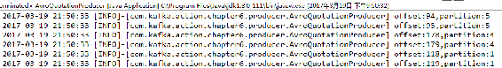
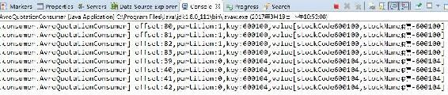

Kafka对部分配置的属性值提供了统一接口，允许用户自定义其实现，客户端只需要实现该接口相应方法，在方法中根据业务需要进行定制，例如，客户端可以自定义分区器以及序列化与反序列化类。本节结合实例简单介绍客户端自定义相关类的具体用法。
在实际应用中，有可能Kafka默认分区策略并不能很好地满足业务需要，此时就需要根据Kafka提供的API开发定制满足业务场景的分区策略，也就是需要自定义一个分区器。自定义一个分区器的基本流程如下。
（1）实现org.apache.kafka.clients.producer.Partitioner接口，重写该接口的int partition(String topic, Object key, byte[] keyBytes, Object value, byte[] valueBytes, Cluster cluster)方法，在该方法中实现分区分配的算法。
（2）在实例化KafkaProducer的配置中指定partitioner.class为自定义的分区器。
继续本章中向Kafka发送股票行情的实例，自定义一个股票行情相关的分区器，该分区器根据股票代码最后一位数字与分区总数取模的策略来分配消息。其实可以根据股票代码对应的市场来划分，这样同一个市场的股票就会在同一个分区，这里只是介绍API的用法并不太关注业务本身。
为实现该功能，我们首先自定义一个名为StockPartitioner的分区器，该类实现了org.apache. kafka.clients.producer.Partitioner接口，同时重写分区分配方法。自定义分区器实现逻辑详见代码清单6-23所示。
代码清单6-23 自定义分区器的实现逻辑
package com.kafka.action.chapter6.producer;
import Java.util.Map;
import org.apache.kafka.clients.producer.Partitioner;
import org.apache.kafka.common.Cluster;
import org.apache.log4j.Logger;
public class StockPartitionor implements Partitioner {
private static final Logger LOG = Logger.getLogger(StockPartitionor.class);
/** 分区数 */
private static final Integer PARTITIONS = 6;
@Override
public void configure(Map<String, ?> arg0) {
}
@Override
public void close() {
}
/**
* 根据股票代码最后一位与分区总长度取模来作为分区分配的策略
*/
@Override
public int partition(String topic, Object key, byte[] keyBytes,
Object value, byte[] valueBytes, Cluster cluster) {
if (null == key) {
return 0;
}
String stockCode = String.valueOf(key);
try {
int partitionId = Integer.valueOf(stockCode.substring(stockCode
.length() - 2)) % PARTITIONS;
return partitionId;
} catch (NumberFormatException e) {
LOG.error("Parse message key occurs exception,key:" + stockCode, e);
return 0;
}
}
}然后修改QuotationProducer.initConfig()方法，在Properties中增加patitioner.class设置，代码如下：
properties.put(ProducerConfig.PARTITIONER_CLASS_CONFIG,
StockPartitionor.class. getName());为了便于验证分区策略，我们新创建一个主题，命令如下：
./kafka-topics.sh --create --zookeeper server-1:2181,server-2:2181,server-3:2181 --replication-factor 1 --partitions 6 --topic stock-quotation-partition最后修改行情推送生产者相应逻辑，向主题stock-quotation-partition发送一批行情信息，待程序执行结束之后，执行以下命令查看stock-quotation-partition-3分区中的消息：
kafka-run-class.sh kafka.tools.DumpLogSegments --files /opt/data/kafka-logs/stock- quotation-partition-3/00000000000000000000.log --print-data-log输出信息部分内容如下：
offset: 0 position: 0 CreateTime: 1488453153954 isvalid: true payloadsize: 44 magic: 1 compresscodec: NoCompressionCodec crc: 4029733061 keysize: 6 key: 600109 payload: 600109|股票-600109|1488453153954|11.8|10.5
offset: 1 position: 84 CreateTime: 1488453153956 isvalid: true payloadsize: 45 magic: 1 compresscodec: NoCompressionCodec crc: 2342800744 keysize: 6 key: 600103 payload: 600103|股票-600103|1488453153956|11.8|10.75
offset: 2 position: 169 CreateTime: 1488453153956 isvalid: true payloadsize: 45 magic: 1 compresscodec: NoCompressionCodec crc: 2816793266 keysize: 6 key: 600103 payload: 600103|股票-600103|1488453153956|11.8|10.41
offset: 3 position: 254 CreateTime: 1488453155982 isvalid: true payloadsize: 45 magic: 1 compresscodec: NoCompressionCodec crc: 3879419630 keysize: 6 key: 600109 payload: 600109|股票-600109|1488453155982|11.8|10.44从输出结果可知：分配到该分区的所有数据都满足消息的Key最后一位数字与分区总数6取模的值等于分区编号3，达到了预期目标。
Kafka对外提供了统一的序列化与反序列化接口，客户端通过实现这两个接口自定义序列化与反序列化类。本小节介绍如何利用Avro序列化框架来自定义序列化与反序列化类。
Avro相关知识本书不进行讲解，读者可查阅Avro官方网站提供的相关资料进行了解。Avro依赖Schema来实现数据结构定义，Avro的Schema主要由JSON对象来表示。通过Avro工具（本书通过Maven插件）将Schema定义的数据结构编译为对应的Java对象。
本小节依然基于向Kafka推送股票行情的实例，详细讲解如何应用Avro框架自定义序列化和反序列化类，并配置自定义序列化与反序列化类实现向Kafka发送消息以及消费消息。
首先在本章对应工程的pom.xml文件中增加Avro依赖包配置，增加以下Maven依赖：
<dependency>
<groupId>org.apache.avro</groupId>
<artifactId>avro</artifactId>
<version>1.8.1</version>
</dependency>同时增加Maven编译Avro Schema的插件配置：
<build>
<plugins>
<plugin>
<groupId>org.apache.avro</groupId>
<artifactId>avro-maven-plugin</artifactId>
<version>1.8.1</version>
<executions>
<execution>
<phase>generate-sources</phase>
<goals>
<goal>schema</goal>
</goals>
<configuration>
<sourceDirectory>${project.basedir}/src/main/resources/
</sourceDirectory>
<outputDirectory>${project.basedir}/src/main/Java/</outputDirectory>
</configuration>
</execution>
</executions>
</plugin>
<plugin>
<groupId>org.apache.maven.plugins</groupId>
<artifactId>maven-compiler-plugin</artifactId>
<configuration>
<source>1.8</source>
<target>1.8</target>
</configuration>
</plugin>
</plugins>
</build>然后定义一个序列化类AvroSerializer，该序列化类实现org.apache.kafka.common.serialization. Serializer接口，同时该序列化类接收Avro Schema编译生成的Java类，这些Java类都继承org.apache.avro.specific.SpecificRecordBase类，并实现该接口的serialize()方法，在该方法中利用Avro框架进行序列化操作，将SpecificRecordBase类型的对象转为字节数组。自定义的AvroSerializer类如代码清单6-24所示。
代码清单6-24 AvroSerializer类的具体实现代码
package com.kafka.action.chapter6.avro;
import Java.io.ByteArrayOutputStream;
import Java.io.IOException;
import Java.util.Map;
import org.apache.avro.io.BinaryEncoder;
import org.apache.avro.io.DatumWriter;
import org.apache.avro.io.EncoderFactory;
import org.apache.avro.specific.SpecificDatumWriter;
import org.apache.avro.specific.SpecificRecordBase;
import org.apache.kafka.common.errors.SerializationException;
import org.apache.kafka.common.serialization.Serializer;
public class AvroSerializer<T extends SpecificRecordBase> implements Serializer<T> {
@Override
public void configure(Map<String, ?> configs, boolean isKey) {
}
/**
* 实现序列化方法
*/
@Override
public byte[] serialize(String topic, T data) {
if (null == data) {
return null;
}
DatumWriter<T> writer = new SpecificDatumWriter<>(data.getSchema());
ByteArrayOutputStream outputStream = new ByteArrayOutputStream();
BinaryEncoder binaryEncoder = EncoderFactory.get().directBinaryEncoder(
outputStream, null);
try {
writer.write(data, binaryEncoder);
} catch (IOException e) {
throw new SerializationException(e.getMessage());
}
return outputStream.toByteArray();
}
@Override
public void close() {
}
},由于本章实例消息体为股票行情信息，因此定义一个股票行情信息对应的Schema文件。在工程的src/main/resources目录下创建一个名为stock_quotation.avs的文件，在该文件中定义股票行情信息对应的Avro Schema。该文件的内容如代码清单6-25所示。
代码清单6-25 stock_quotation.avs文件的具体内容
{
"namespace": "com.kafka.action.chapter6.avro",
"type": "record",
"name": "AvroStockQuotation",
"fields": [
{"name": "stockCode", "type": "string"},
{"name": "stockName", "type": "string"},
{"name": "tradeTime", "type": "long"},
{"name": "preClosePrice", "type": "float"},
{"name": "openPrice", "type": "float"},
{"name": "currentPrice", "type": "float"},
{"name": "highPrice", "type": "float"},
{"name": "lowPrice", "type": "float"}
]
}本例Avro Schema文件各字段说明如表6-1所示。
表6-1 Avro Schema基本字段说明
|
字段 |
描述 |
|---|---|
|
namespace |
指定Java对象的包名 |
|
fields |
指定属性域，各属性包括属性名和属性类型，也可为属性指定默认值 |
|
type |
用于指定类型，若是fileds的子节点则表示属性字段类型，否则指Schema编译后的Java对象类型，若是普通JavaBean对象则该字段对应值为record |
|
name |
Java类名或者属性名 |
然后通过Maven插件编译该工程。在Eclipse中点击该工程右键Run As，选中Maven install运行编译该工程，编译完后刷新工程，在com.kafka.action.chapter6.avro包下生成一个AvroStock Quotation.Java类，该类继承自org.apache.avro.specific.SpecificRecordBase实现了org.apache.avro. specific. SpecificRecord接口。
最后定义一个生产者AvroQuotationProducer类，在实例化KafkaProducer时指定消息体的序列化类为自定义的AvroSerializer类，该生产者发送AvroStockQuotation类型的消息。核心代码如下：
properties.put(ProducerConfig.VALUE_SERIALIZER_CLASS_CONFIG
AvroSerializer.class.getName());
producer = new KafkaProducer<String, AvroStockQuotation>(configs);在AvroQuotationProducer类中定义一个发送消息的方法，该方法的具体实现如代码清单6-26所示。
代码清单6-26 AvroQuotationProducer发送消息方法的具体实现
public static void sendMsg(TopicEnum topic, AvroStockQuotation message) {
if (null == message) {
return;
}
if (StringUtils.equals(topic.getDataType().getClass().getName(),message.
getClass().getName())) {
ProducerRecord<String, AvroStockQuotation> record = new ProducerRecord
<String, AvroStockQuotation>(topic.getTopicName(),
(String) message.getStockCode(),message);
producer.send(record, new Callback() {
@Override
public void onCompletion(RecordMetadata metaData, Exception exception) {
if (null != exception) {// 发送异常记录异常信息
LOG.error("Send message occurs exception.", exception);
}
if (null != metaData) {
LOG.info(String.format("offset:%s,partition:%s",
metaData.offset(), metaData.partition()));
}
}
});
}
}该方法入参TopicEnum是一个枚举类，用于定义主题与消息类型的对应关系。该枚举类的具体实现如代码清单6-27所示，关于定义该枚举类的原因将在自定义反序列化类时进行介绍。
代码清单6-27 TopicEnum枚举类的具体实现
package com.kafka.action.chapter6.avro;
import org.apache.avro.specific.SpecificRecordBase;
import org.apache.commons.lang.StringUtils;
public enum TopicEnum {
STOCK_QUOTATION_AVRO("stock-quotation-avro", new AvroStockQuotation());
public String topicName;
public SpecificRecordBase dataType;
private TopicEnum(String topicName, SpecificRecordBase dataType) {
this.topicName = topicName;
this.dataType = dataType;
}
……省略了属性的get和set方法……
public static TopicEnum getEnum(String topicName) {
if (StringUtils.isBlank(topicName)) {
return null;
}
for (TopicEnum topic : values()) {
if (StringUtils.equalsIgnoreCase(topic.getTopicName(), topicName)) {
return topic;
}
}
return null;
}
}在main方法中，调用该生产者发送100条模拟股票行情信息的消息。在运行该方法之前，首先创建一个名为stock-quotation-avro的主题，创建该主题命令如下：
kafka-topics.sh --create --zookeeper server-1:2181,server-2:2181,server-3:2181 --replication-factor 1 --partitions 6 --topic stock-quotation-avro启动该生产者，在Eclipse控制台显示的信息部分内容如图6-1所示。

图6-1 使用Avro序列化消息的生产者执行结果
由于生产者发送消息时自定义了消息的序列化方式，因此消费者消费消息时也需要以同样的方式反序列化消息。
首先，定义一个使用Avro框架反序列化的类AvroDeserializer，该类实现了org.apache.kafka. common.serialization.Deserializer接口，重写deserialize(String topic, byte[] data)方法，在该方法中将消息字节数组转为具体的消息实体对象。
在应用Avro框架实现反序列化时，要通过具体实例类型的Schema实例化DatumReader。由于AvroDeserializer定义为一个泛型，通过Java反射机制将字节码数组得到具体类型比较复杂，因此一种简单的实现方式是直接将主题与该主题对应消息类型关联起来，因此我们定义了一个枚举类型的TopicEnum。
AvroDeserizlizer类的具体实现代码如代码清单6-28所示。
代码清单6-28 AvroDeserizlizer类的具体实现代码
package com.kafka.action.chapter6.avro;
import Java.io.ByteArrayInputStream;
import Java.util.Map;
import org.apache.avro.io.BinaryDecoder;
import org.apache.avro.io.DatumReader;
import org.apache.avro.io.DecoderFactory;
import org.apache.avro.specific.SpecificDatumReader;
import org.apache.avro.specific.SpecificRecordBase;
import org.apache.kafka.common.serialization.Deserializer;
import com.sun.xml.internal.ws.encoding.soap.DeserializationException;
public class AvroDeserializer<T extends SpecificRecordBase> implements
Deserializer<T> {
@Override
public void configure(Map<String, ?> configs, boolean isKey) {
}
@Override
public void close() {
}
@Override
public T deserialize(String topic, byte[] data) {
if (null == data) {
return null;
}
try {
// 根据主题名从TopicEnum中获取该主题对应的SpecificRecordBase类型的实体类
SpecificRecordBase record = TopicEnum.getEnum(topic).getDataType();
if (null == record) {
return null;
}
// 得到schema实例化DatumReader
DatumReader<T> userDatumReader = new SpecificDatumReader<>(
record.getSchema());
BinaryDecoder binaryEncoder = DecoderFactory.get()
.directBinaryDecoder(new ByteArrayInputStream(data), null);
return userDatumReader.read(null, binaryEncoder);
} catch (Exception e) {
throw new DeserializationException(e.getMessage());
}
}
}然后，实现一个消费者，在消费者实例化时指定value.deserializer配置项的值为自定义的反序列化类，代码如下：
props.put(ConsumerConfig.VALUE_DESERIALIZER_CLASS_CONFIG,
AvroDeserializer.class.getName());该消费者简单打印出每条消息的偏移量、分区及消息实体对象AvroStockQuotation的股票代码与股票名，具体实现代码如代码清单6-29所示。
代码清单6-29 使用Avro框架反序列化的消费者的具体实现代码
package com.kafka.action.chapter6.consumer;
import Java.util.Collections;
import Java.util.Properties;
import org.apache.kafka.clients.consumer.ConsumerConfig;
import org.apache.kafka.clients.consumer.ConsumerRecord;
import org.apache.kafka.clients.consumer.ConsumerRecords;
import org.apache.kafka.clients.consumer.KafkaConsumer;
import org.apache.kafka.common.serialization.StringDeserializer;
import org.apache.log4j.Logger;
import com.kafka.action.chapter6.avro.AvroDeserializer;
import com.kafka.action.chapter6.avro.AvroStockQuotation;
import com.kafka.action.chapter6.avro.TopicEnum;
public class AvroQuotationConsumer {
private static final Logger LOG = Logger.getLogger(AvroQuotationConsumer.class);
private static final String BROKER_LIST = "server-1:9092,server-2:9092,
server-3:9092";
private static final String GROUP_ID = "avro-consumer";
private static final Long TIME_OUT = 30L;
private static KafkaConsumer<String, AvroStockQuotation> consumer = new KafkaConsumer
<String, AvroStockQuotation>(initConfig());
private static Properties initConfig() {
Properties props = new Properties();
props.put(ConsumerConfig.BOOTSTRAP_SERVERS_CONFIG, BROKER_LIST);
props.put(ConsumerConfig.ENABLE_AUTO_COMMIT_CONFIG, true);
props.put(ConsumerConfig.GROUP_ID_CONFIG, GROUP_ID);
props.put(ConsumerConfig.KEY_DESERIALIZER_CLASS_CONFIG,
StringDeserializer.class.getName());
props.put(ConsumerConfig.VALUE_DESERIALIZER_CLASS_CONFIG,
AvroDeserializer.class.getName());
return props;
}
public void consume(String topicName) {
try {
if (null == consumer) {
consumer = new KafkaConsumer<String, AvroStockQuotation>(initConfig());
}
while (true) {
consumer.subscribe(Collections.singletonList(topicName));
ConsumerRecords<String, AvroStockQuotation> records =
consumer.poll(TIME_OUT);
AvroStockQuotation quotation = null;
if (null != records) {
for (ConsumerRecord<String, AvroStockQuotation> record : records) {
quotation = record.value();
LOG.info(String.format("offset:%s,partition:%s,key:%s,
value[stockCode%s,stockName%s]",
record.offset(), record.partition(),
record.key(), quotation.getStockCode(),
quotation.getStockName()));
}
}
}
} catch (Exception e) {
LOG.error("Consume data from Kafka occurs exception", e);
} finally {
consumer.close();
consumer = null;
}
}
public static void main(String[] args) {
AvroQuotationConsumer consumer = new AvroQuotationConsumer();
while (true) {
consumer.consume(TopicEnum.STOCK_QUOTATION_AVRO.getTopicName());
}
}
}运行该消费者，控制台输出信息如图6-2所示。

图6-2 使用Avro反序列化的消费者执行结果